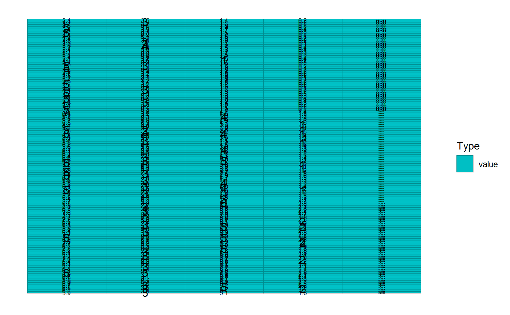
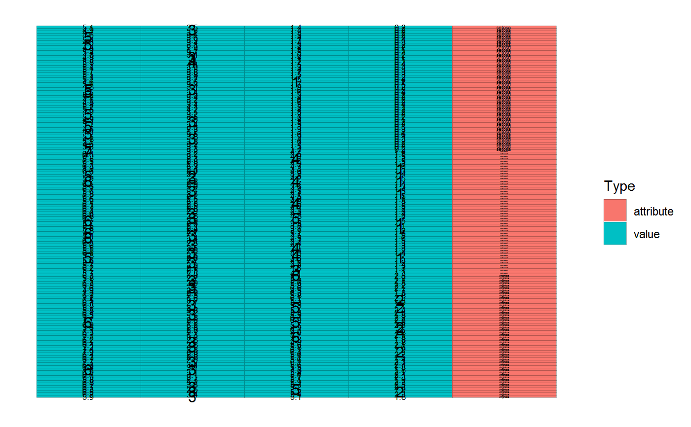
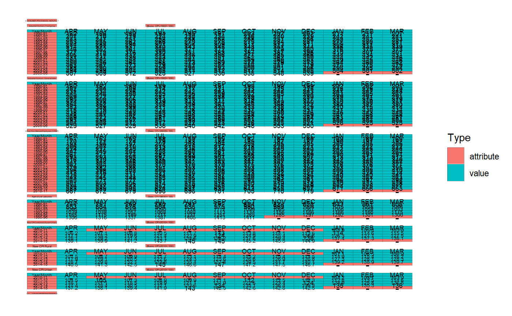

After as_cell_df (entry point to tidycells) you may need to use this function
or individual Value/Attribute Classifier-functions as listed below in "see also" - section.
Here the idea is to classify all cells into either value, attribute, empty which will be
used by analyze_cells for further processing.
value_attribute_classify(d, classifier = basic_classifier())
| d | a Cell DF |
|---|---|
| classifier | a classifier |
a Cell DF with Value/Attribute Classification. The underlying tibble will contain an extra column named type.
In order to understand the data orientation and detect data-blocks Cell DF requires additional column named type.
This type column potentially contains either value, attribute, empty. The value are given corresponding to cells
with observations in it. The tag, attribute is for the identifier of these cells. Lastly, empty cells are useless cells or
cells with no meaningful information.
For classifier following options are present:
basic_classifier : naive classifier which recode data_type.
sample_based_classifier : sample-based classifier.
numeric_values_classifier : considers number like cells as values.
Each of the above are available as individual functions. Those can also be directly applied on a cell-df.
However, it is recommended to use value_attribute_classify as it tests for integrity after classification.
Individual classifier functions:
For interactive Value/Attribute Classification check visual_va_classify
iris %>% as_cell_df() %>% sample_based_classifier(value_sample = "setosa") %>% numeric_values_classifier() %>% plot()if (rlang::is_installed("tidyxl")) { cdn <- system.file("extdata", "RBI_HBS_Table_No_166.xlsx", package = "tidycells") %>% tidyxl::xlsx_cells() cdn <- cdn %>% dplyr::filter(sheet == sheet[1]) %>% as_cell_df() # all of these are same except value_attribute_classify will perform validate_cells once again cd1 <- sample_based_classifier(cdn, value_sample = "APR") cd2 <- sample_based_classifier(value_sample = "APR")(cdn) cd3 <- value_attribute_classify(cdn, classifier = sample_based_classifier(value_sample = "APR") ) # see it plot(cd3) }